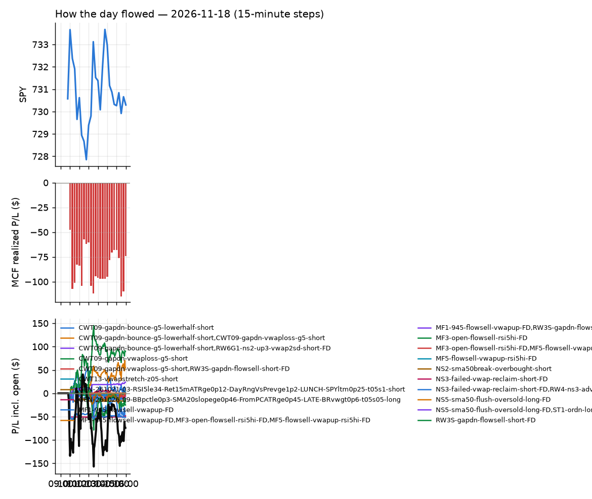
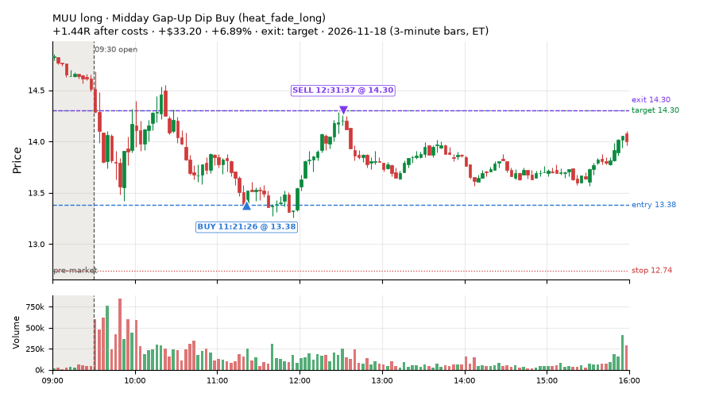
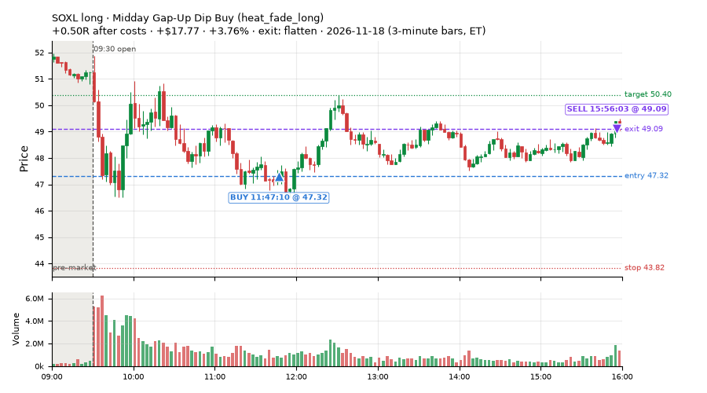
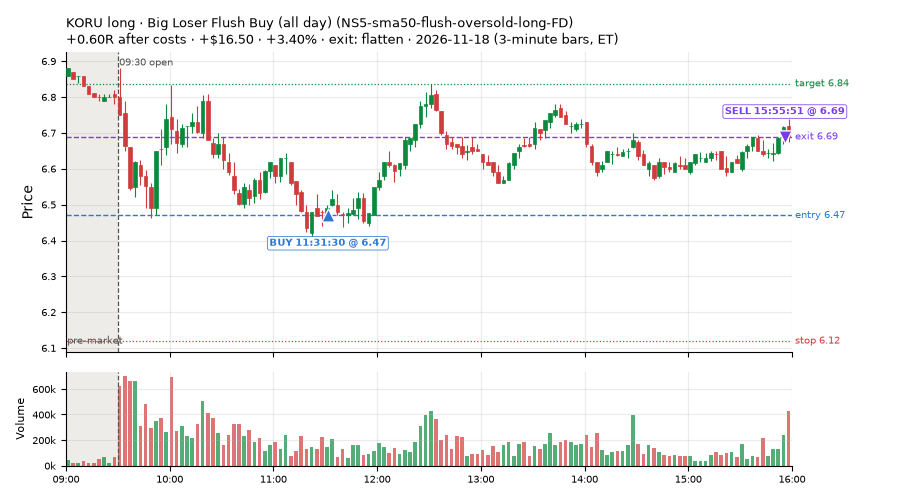
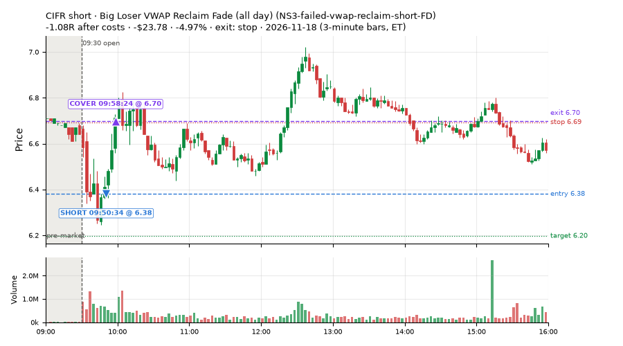
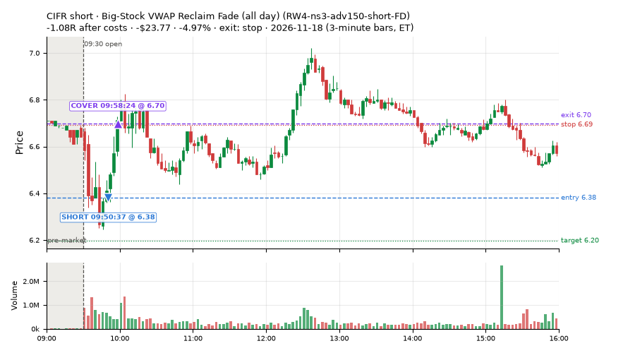
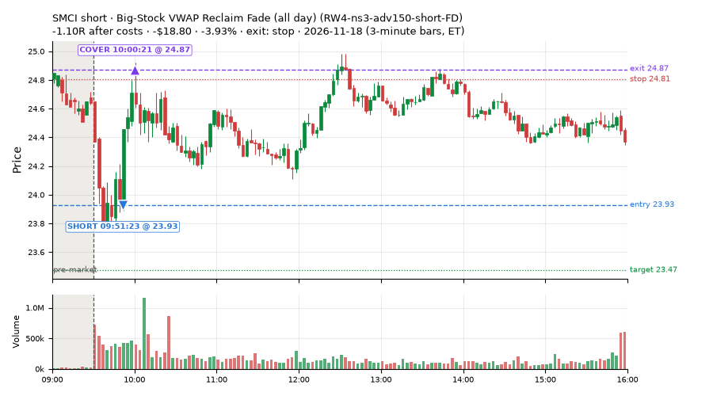
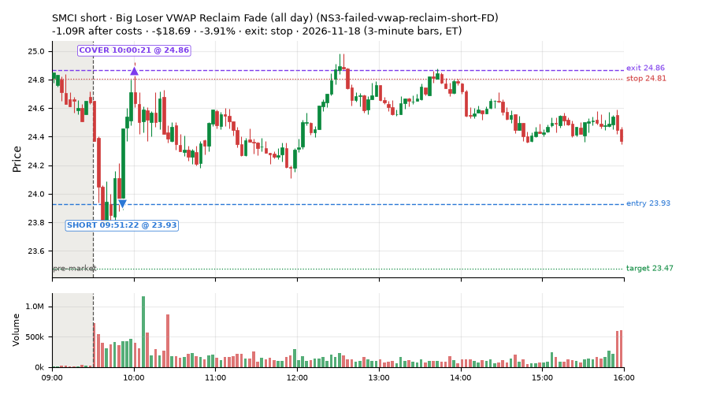
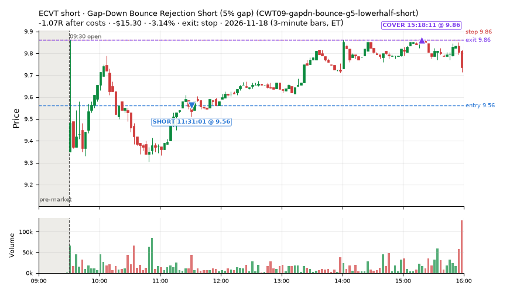

179 trades · win rate 47% · P/L $-74.11
PROBATION: no live setup has passed both locked test periods. 10 owner-directed setups added 2026-10-08 (MarcoFlow top 5 + 5 new), untested live. RW6G1 (RW6 + VWAP band guard) added 2026-10-09, probation.

| Symbol | Setup | Side | In | Out | Entry | Exit | Exit reason | % gained | P/L |
|---|---|---|---|---|---|---|---|---|---|
| MUU | Midday Gap-Up Dip Buy (heat_fade_long) | long | 11:21 | 12:31 | 13.38 | 14.30 | target | +6.89% | $33.20 |
| SOXL | Midday Gap-Up Dip Buy (heat_fade_long) | long | 11:47 | 15:56 | 47.32 | 49.09 | flatten | +3.76% | $17.77 |
| KORU | Big Loser Flush Buy (all day) (NS5-sma50-flush-oversold-long-FD) | long | 11:31 | 15:55 | 6.47 | 6.69 | flatten | +3.40% | $16.50 |
| Symbol | Setup | Side | In | Out | Entry | Exit | Exit reason | % lost | P/L |
|---|---|---|---|---|---|---|---|---|---|
| CIFR | NS3-failed-vwap-reclaim-short-FD | short | 09:50 | 09:58 | 6.38 | 6.70 | stop | -4.97% | $-23.78 |
| CIFR | RW4-ns3-adv150-short-FD | short | 09:50 | 09:58 | 6.38 | 6.70 | stop | -4.97% | $-23.77 |
| SMCI | RW4-ns3-adv150-short-FD | short | 09:51 | 10:00 | 23.93 | 24.87 | stop | -3.93% | $-18.80 |
| SMCI | NS3-failed-vwap-reclaim-short-FD | short | 09:51 | 10:00 | 23.93 | 24.86 | stop | -3.91% | $-18.69 |
| ECVT | CWT09-gapdn-bounce-g5-lowerhalf-short | short | 11:31 | 15:18 | 9.56 | 9.86 | stop | -3.14% | $-15.30 |








Signal to fill: median 1s, 90th percentile 3s (178 trades). Bars close each minute; the order follows the bar close.
Best excursion (MFE): median 0.66R; worst (MAE) median 0.76R. 23% of trades never got +0.25R in our favour; 9 reached +1R and still closed at or below 0.
| Symbol | Setup | Best R | Worst R | Closed R |
|---|---|---|---|---|
| JNUG | CWT09-gapdn-vwaploss-g5-short | +3.03 | -1.18 | -1.23 |
| WEC | MF1-945-flowsell-vwapup-FD | +2.15 | -0.98 | -1.23 |
| ARDT | CWT09-gapdn-vwaploss-g5-short | +1.02 | -1.02 | -1.24 |
| CRH | NS2-sma50break-overbought-short | +1.10 | -1.00 | -1.09 |
| WEC | MF3-open-flowsell-rsi5hi-FD | +0.97 | -1.01 | -1.13 |
| Entry time | Trades | Win | Avg R | P/L |
|---|---|---|---|---|
| 09:50-10:30 | 49 | 49% | -0.12 | $-67.95 |
| 10:30-11:30 | 69 | 36% | -0.31 | $-42.82 |
| 11:30-13:00 | 50 | 56% | +0.05 | $11.40 |
| 13:00-14:00 | 2 | 0% | -0.09 | $-1.38 |
| 14:00-16:00 | 9 | 89% | +0.20 | $26.64 |
| Setup | Trades | Win | Avg R after costs | Adj R (net of SPY) | Avg R ex-market (all sessions) | P/L |
|---|---|---|---|---|---|---|
| Gap-Down Bounce Rejection Short (5% gap) (CWT09-gapdn-bounce-g5-lowerhalf-short) | 12.0 | 25% | -0.26 | -0.26 | -0.32 (beta -1.08, n 158) | $-48.52 |
| Gap-Down VWAP Loss Short (5% gap) (CWT09-gapdn-vwaploss-g5-short) | 10.0 | 40% | -0.14 | -0.32 | -0.44 (beta -3.36, n 149) | $-2.11 |
| Stretched Above VWAP Fade (CWT13-vwapstretch-z05-short) | 3.0 | 0% | -0.76 | -0.63 | -0.05 (beta -0.55, n 145) | $-11.27 |
| Generated: Lunch Wide-Range Short (SPY down) (GEN-261021-03-RSI5le34-Ret15mATRge0p12-DayRngVsPrevge1p2-LUNCH-SPYltm0p25-t05s1-short) | 1.0 | 0% | -1.06 | -0.34 | – | $-5.67 |
| Generated: Late Uptrend Dip Buy (up day) (GEN-261026-09-BBpctle0p3-SMA20slopege0p46-FromPCATRge0p45-LATE-BRvwgt0p6-t05s05-long) | 1.0 | 0% | -1.05 | -0.95 | – | $-5.76 |
| Early Sellers Above VWAP (all day) (MF1-945-flowsell-vwapup-FD) | 6.0 | 0% | -1.26 | -1.37 | -0.24 (beta -1.80, n 113) | $-12.12 |
| Early Sellers into a Pop (all day) (MF3-open-flowsell-rsi5hi-FD) | 14.0 | 36% | -0.28 | -0.22 | -0.10 (beta -0.92, n 162) | $-25.14 |
| Sellers into Strength (full-day copy) (MF5-flowsell-vwapup-rsi5hi-FD) | 9.0 | 56% | +0.21 | +0.18 | +0.01 (beta -1.15, n 98) | $3.04 |
| Big Gainer Average Reclaim Fade (NS2-sma50break-overbought-short) owner-directed; holdouts once: Sep-Oct -0.115R n76, Apr-Jun +0.021R n587 | 5.0 | 20% | -0.71 | -0.94 | -0.54 (beta -2.40, n 13) | $-16.69 |
| Big Loser VWAP Reclaim Fade (all day) (NS3-failed-vwap-reclaim-short-FD) | 6.0 | 33% | -0.52 | -0.48 | -0.22 (beta -0.87, n 152) | $-48.45 |
| Big Loser Flush Buy (all day) (NS5-sma50-flush-oversold-long-FD) | 13.0 | 85% | +0.40 | +0.32 | -0.02 (beta +1.07, n 47) | $55.13 |
| Gap-Down Heavy-Selling Short, no RSI condition (all day) (RW3S-gapdn-flowsell-short-FD) | 76.0 | 53% | -0.12 | -0.18 | -0.13 (beta -0.73, n 131) | $-18.60 |
| Big-Stock VWAP Reclaim Fade (all day) (RW4-ns3-adv150-short-FD) | 7.0 | 29% | -0.48 | -0.45 | -0.21 (beta -0.67, n 108) | $-51.24 |
| Big Gainer Fade, VWAP Band Guard (all day) (RW6G1-ns2-up3-vwap2sd-short-FD) | 1.0 | 0% | -0.11 | +0.03 | +0.13 (beta -0.41, n 37) | $-0.21 |
| Opening-Range Breakdown Buy (all day) (ST1-ordn-long-pm-t05s1-FD) | 3.0 | 100% | +0.77 | +0.70 | -0.03 (beta +1.24, n 49) | $23.93 |
| Midday Gap-Up Dip Buy (heat_fade_long) failed Apr-Jun holdout: -0.138R/trade over 1043 trades | 12.0 | 75% | +0.58 | +0.45 | +0.16 (beta +1.31, n 137) | $89.58 |
Market direction (SPY, beta 1) accounted for $23.61 of today's $-74.11; the rest ($-97.72) came from the setups themselves. Avg R net of SPY: -0.18 (incl. a hedge leg's cost; report only).
34 setups live today. Today: 652 signals, 179 taken, 4 lost because another setup held the symbol (1%). Since 2026-10-21 (21 sessions): 29830 signals, 9332 taken, 1321 lost to other setups (4%). Peak open positions today 87 of 300 slots. Earnings blackout removed 321 symbols before scanning.
Simulated playing time (not live): 20441 what-if trades of signals not taken, avg -0.04R, 55% winners; of them 1320 lost to another setup (avg -0.03R).
Crowded out: NS2-sma50break-overbought-short · Starved: MF1-945-flowsell-vwapup-FD, heat_fade_long, heat_fade_long-FD, heat_fade_short-FD
| Prio | Setup | Today sig / taken | Sessions | Signals / taken / trades | Taken/day | Expected/day | Lost to other setups | Lost to (setup n) | Top skip reasons | SIMULATED: not-taken n / avg R / win | Verdict |
|---|---|---|---|---|---|---|---|---|---|---|---|
| 1 | Opening-Range Breakdown Buy (all day) ST1-ordn-long-pm-t05s1-FD | 7 / 3 | 21 | 77 / 49 / 49 | 2.33 | 3.49 | 1 | heat_fade_short-FD 1 | spread / quote / size 18, slots full 3, daily loss cap 3 | 28 / +0.02R / 57% | slow 11.7 entries/week; ~5 weeks to 60 trades |
| 2 | Big Gainer Average Reclaim Fade NS2-sma50break-overbought-short | 21 / 5 | 21 | 247 / 13 / 13 | 0.62 | 5.74 | 129 | NS2-sma50break-overbought-short-FD 115, RW6-ns2-up3-short-FD 56, CWT12-coil-k4-long 10 | symbol held by another setup 129, spread / quote / size 54, not shortable / shorts off 29 | 234 / +0.40R / 76% | crowded-out 129 of 247 signals (52%) lost to setups already holding the symbol |
| 3 | Early Sellers Above VWAP (all day) MF1-945-flowsell-vwapup-FD | 30 / 6 | 21 | 395 / 113 / 113 | 5.38 | 23.94 | 8 | CWT12-coil-k4-long 5, CWT14-failbrk-orl-p05-long 2, CWT12-coil-k6-long 1 | daily loss cap 146, spread / quote / size 88, broker rejected 15 | 282 / -0.17R / 32% | starved 5.38 entries/day vs ~23.94 expected |
| 4 | Midday Gap-Up Dip Buy heat_fade_long | 18 / 12 | 21 | 230 / 137 / 137 | 6.52 | 30.36 | 21 | heat_fade_long-FD 12, NS3-failed-vwap-reclaim-short-FD 3, RW4-ns3-adv150-short-FD 3 | spread / quote / size 33, daily loss cap 23, symbol held by another setup 21 | 93 / -0.04R / 54% | starved 6.52 entries/day vs ~30.36 expected |
| 5 | Gap-Down Bounce Rejection Short (5% gap) CWT09-gapdn-bounce-g5-lowerhalf-short | 23 / 12 | 21 | 1003 / 158 / 158 | 7.52 | – | 13 | CWT14-failbrk-pdl-p05-lowvol-long 4, CWT12-coil-k4-long 3, CWT14-failbrk-pdl-p05-long 3 | not shortable / shorts off 581, daily loss cap 99, spread / quote / size 90 | 841 / -0.04R / 48% | ok 37.6 entries/week |
| 6 | Stretched Above VWAP Fade CWT13-vwapstretch-z05-short | 34 / 3 | 19 | 384 / 145 / 145 | 7.63 | – | 3 | LIQ-orl-sweep-open15-s25-long 1, CWT12-coil-k4-long 1, CWT12-coil-k6-long 1 | daily loss cap 165, not shortable / shorts off 32, spread / quote / size 26 | 239 / -0.05R / 50% | ok 38.2 entries/week |
| 7 | Gap-Down VWAP Loss Short (5% gap) CWT09-gapdn-vwaploss-g5-short | 24 / 10 | 18 | 1106 / 149 / 149 | 8.28 | – | 14 | CWT14-failbrk-orl-p05-long 5, CWT14-failbrk-pdl-p05-long 3, CWT14-failbrk-pdl-p05-lowvol-long 3 | not shortable / shorts off 688, spread / quote / size 100, slots full 60 | 945 / -0.21R / 35% | ok 41.4 entries/week |
| 8 | Big Loser VWAP Reclaim Fade (all day) NS3-failed-vwap-reclaim-short-FD | 157 / 6 | 13 | 924 / 152 / 152 | 11.69 | 22.02 | 75 | NS3-failed-vwap-reclaim-short-FD 21, ST2-slope20up-long-am-t05s1-FD 19, RW4-ns3-adv150-short-FD 19 | daily loss cap 411, not shortable / shorts off 125, slots full 85 | 772 / -0.05R / 43% | ok 58.5 entries/week |
| 9 | Big-Stock VWAP Reclaim Fade (all day) RW4-ns3-adv150-short-FD | 129 / 7 | 13 | 721 / 108 / 108 | 8.31 | 17.34 | 89 | NS3-failed-vwap-reclaim-short-FD 42, RW4-ns3-adv150-short-FD 40, ST2-slope20up-long-am-t05s1-FD 17 | daily loss cap 307, symbol held by another setup 89, slots full 78 | 613 / -0.06R / 42% | ok 41.5 entries/week |
| 10 | Early Sellers into a Pop (all day) MF3-open-flowsell-rsi5hi-FD | 20 / 14 | 12 | 309 / 162 / 162 | 13.50 | 24.16 | 4 | ST2-slope20up-long-am-t05s1-FD 1, heat_fade_long 1, CWT14-failbrk-orl-p05-long 1 | daily loss cap 53, broker rejected 27, not shortable / shorts off 24 | 147 / -0.05R / 48% | ok 67.5 entries/week |
| 11 | Sellers into Strength (full-day copy) MF5-flowsell-vwapup-rsi5hi-FD | 13 / 9 | 12 | 192 / 98 / 98 | 8.17 | 15.47 | 3 | MF1-945-flowsell-vwapup-FD 2, MF3-open-flowsell-rsi5hi-FD 2, heat_fade_short 1 | broker rejected 33, daily loss cap 31, spread / quote / size 15 | 94 / -0.15R / 44% | ok 40.8 entries/week |
| 12 | Big Loser Flush Buy (all day) NS5-sma50-flush-oversold-long-FD | 18 / 13 | 11 | 96 / 47 / 47 | 4.27 | 6.32 | 8 | NS3-failed-vwap-reclaim-short-FD 4, RW4-ns3-adv150-short-FD 4, ST4-emadn-long-am-t1s05-FD 1 | daily loss cap 24, spread / quote / size 9, symbol held by another setup 8 | 49 / +0.03R / 53% | ok 21.4 entries/week |
| 13 | Big Gainer Fade, VWAP Band Guard (all day) RW6G1-ns2-up3-vwap2sd-short-FD | 10 / 1 | 11 | 84 / 37 / 37 | 3.36 | 3.73 | 4 | RW6-ns2-up3-short-FD 3, NS2-sma50break-overbought-short-FD 2, RW6G1-ns2-up3-vwap2sd-short-FD 2 | not shortable / shorts off 35, symbol held by another setup 4, broker rejected 4 | 47 / +0.17R / 62% | ok 16.8 entries/week |
| 14 | Gap-Down Heavy-Selling Short, no RSI condition (all day) RW3S-gapdn-flowsell-short-FD | 142 / 76 | 3 | 465 / 131 / 131 | 43.67 | – | 7 | CWT12-coil-k4-long 3, CWT14-failbrk-pdl-p05-long 2, MF1-945-flowsell-vwapup-FD 1 | daily loss cap 186, spread / quote / size 105, not shortable / shorts off 32 | 334 / +0.06R / 57% | ok 218.3 entries/week |
| 15 | Generated: Late Uptrend Dip Buy (up day) GEN-261026-09-BBpctle0p3-SMA20slopege0p46-FromPCATRge0p45-LATE-BRvwgt0p6-t05s05-long | 1 / 1 | 1 | 1 / 1 / 1 | 1.00 | – | 0 | – | – | 0 / – | slow 5.0 entries/week; ~12 weeks to 60 trades |
| 16 | Generated: Late RSI Drop Short (big bar) GEN-261020-02-RSIslopelem19-BarRngATRge0p14-BuyPressge0p17-LATE-BRvwgt0p7-t05s1-short | 0 / 0 | 1 | 0 / 0 / 0 | 0.00 | – | 0 | – | – | 0 / – | quiet - wait no signals in 1 session(s); too early to tell |
| 17 | Generated: Lunch RSI(2) Flush Buy (volatile) GEN-261021-08-RSI2le0-Ret15mATRge0p16-ATRdge3p6-LUNCH-QQQgt0p6-holdtr-long | 0 / 0 | 1 | 0 / 0 / 0 | 0.00 | – | 0 | – | – | 0 / – | quiet - wait no signals in 1 session(s); too early to tell |
| 18 | Podcast: Breadth Thrust, Strong Large Caps (observation) GEN-POD1022-01-thrasher-breadth-thrust-stocks-holdtr-long | 0 / 0 | 1 | 0 / 0 / 0 | 0.00 | – | 0 | – | – | 0 / – | quiet - wait no signals in 1 session(s); too early to tell |
| 19 | Backside VWAP-Test Short (big runner) CWT04-backside-vwaptest-a25-short | 0 / 0 | 1 | 0 / 0 / 0 | 0.00 | – | 0 | – | – | 0 / – | quiet - wait no signals in 1 session(s); too early to tell |
| 20 | Generated: Late-AM VWAP Pop Short (SPY up) GEN-261023-01-VWAPxUp-VWAPatrge0p33-LAM-SPYgt0p5-t05s05-short | 0 / 0 | 1 | 0 / 0 / 0 | 0.00 | – | 0 | – | – | 0 / – | quiet - wait no signals in 1 session(s); too early to tell |
| 21 | Generated: PM New-Low Buy (strong mkt) GEN-261023-05-NewLOD-SMA20dlem0p94-ORLdistlem0p24-PM-BRopgt0p65-hold-long | 0 / 0 | 1 | 0 / 0 / 0 | 0.00 | – | 0 | – | – | 0 / – | quiet - wait no signals in 1 session(s); too early to tell |
| 22 | Generated: Open Below-VWAP Turn Buy (QQQ up) GEN-261021-10-MACDhge0p079-VWAPbarslem7-OPEN-QQQup-t1s05-long | 0 / 0 | 1 | 0 / 0 / 0 | 0.00 | – | 0 | – | – | 0 / – | quiet - wait no signals in 1 session(s); too early to tell |
| 23 | Generated: Open RSI Pop Reversal Short GEN-261029-10-RSIslopege19-Ret5mlem0p21-EMAdiffge0p29-OPEN-BRvwgt0p5-t1s1-short | 0 / 0 | 1 | 0 / 0 / 0 | 0.00 | – | 0 | – | – | 0 / – | quiet - wait no signals in 1 session(s); too early to tell |
| 24 | Generated: Lunch VWAP Reclaim Buy GEN-261028-03-EMAdChgge0p15-VWAPxUp-Since950ATRlem0p43-LUNCH-SPYgt0p25-hold-long | 0 / 0 | 1 | 0 / 0 / 0 | 0.00 | – | 0 | – | – | 0 / – | quiet - wait no signals in 1 session(s); too early to tell |
| 25 | Generated: PM Big Red Bar Buy (up day) GEN-261028-10-BarRngATRge0p18-Flow3lem0p54-FromPCATRge0p28-PM-SPYgt0p5-hold-long | 0 / 0 | 1 | 0 / 0 / 0 | 0.00 | – | 0 | – | – | 0 / – | quiet - wait no signals in 1 session(s); too early to tell |
| 26 | Generated: Late Failed-Breakdown Pop Short GEN-261023-09-ORBfailDn-Ret15mge0p54-LATE-BRvwgt0p7-holdtr-short | 0 / 0 | 1 | 0 / 0 / 0 | 0.00 | – | 0 | – | – | 0 / – | quiet - wait no signals in 1 session(s); too early to tell |
| 27 | Generated: PM Volatile Dip Buy (strong mkt) GEN-261023-02-Ret15mATRlem0p068-EMAdChgge0p028-ATRdge6-PM-BRopgt0p65-hold-long | 0 / 0 | 1 | 0 / 0 / 0 | 0.00 | – | 0 | – | – | 0 / – | quiet - wait no signals in 1 session(s); too early to tell |
| 28 | Afternoon Exhaustion Short, Gap-Down, SPY Up (near-miss) NM-RWR1-exh150-gapdn-spyup-pm-short | 0 / 0 | 1 | 0 / 0 / 0 | 0.00 | – | 0 | – | – | 0 / – | quiet - wait no signals in 1 session(s); too early to tell |
| 29 | Generated: Late Failed-Breakout Buy (trend) GEN-261022-02-ORBfailUp-EMAdChglem0p094-ADX7ge57-LATE-BRvwgt0p7-t05s1-long | 0 / 0 | 1 | 0 / 0 / 0 | 0.00 | – | 0 | – | – | 0 / – | quiet - wait no signals in 1 session(s); too early to tell |
| 30 | Prior-Day Low Sweep Reversal to VWAP LIQ-pdl-sweep-open15-vwap-long | 0 / 0 | 1 | 0 / 0 / 0 | 0.00 | – | 0 | – | – | 0 / – | quiet - wait no signals in 1 session(s); too early to tell |
| 31 | Generated: Lunch Wide-Range Short (SPY down) GEN-261021-03-RSI5le34-Ret15mATRge0p12-DayRngVsPrevge1p2-LUNCH-SPYltm0p25-t05s1-short | 2 / 1 | 1 | 2 / 1 / 1 | 1.00 | – | 0 | – | spread / quote / size 1 | 1 / +0.51R / 100% | slow 5.0 entries/week; ~12 weeks to 60 trades |
| 32 | Generated: Midday Oversold Short (quiet day) GEN-261028-06-RSI5le13-VWAPatrlem0p15-DayRngVsPrevle0p34-MID-BRoplt0p35-hold-short | 0 / 0 | 1 | 0 / 0 / 0 | 0.00 | – | 0 | – | – | 0 / – | quiet - wait no signals in 1 session(s); too early to tell |
| 33 | Generated: Morning Overbought Coil Buy GEN-261029-05-BearDiv-RSI14ge78-Compress6le0p091-AM-BRopgt0p5-t05s05-long | 0 / 0 | 1 | 0 / 0 / 0 | 0.00 | – | 0 | – | – | 0 / – | quiet - wait no signals in 1 session(s); too early to tell |
| 34 | Generated: Late-AM Divergence Short (quiet) GEN-261021-01-BearDiv-RVolDayle0p47-BarsSinceHODle0-LAM-SPYltm0p25-t1s1-short | 3 / 0 | 1 | 3 / 0 / 0 | 0.00 | – | 0 | – | other 3 | 3 / -1.15R / 0% | slow no entries yet |
Every trade is attached as a CSV you can open and edit in Excel or Google Sheets. Live page: https://misiti15.github.io/MCF/live/